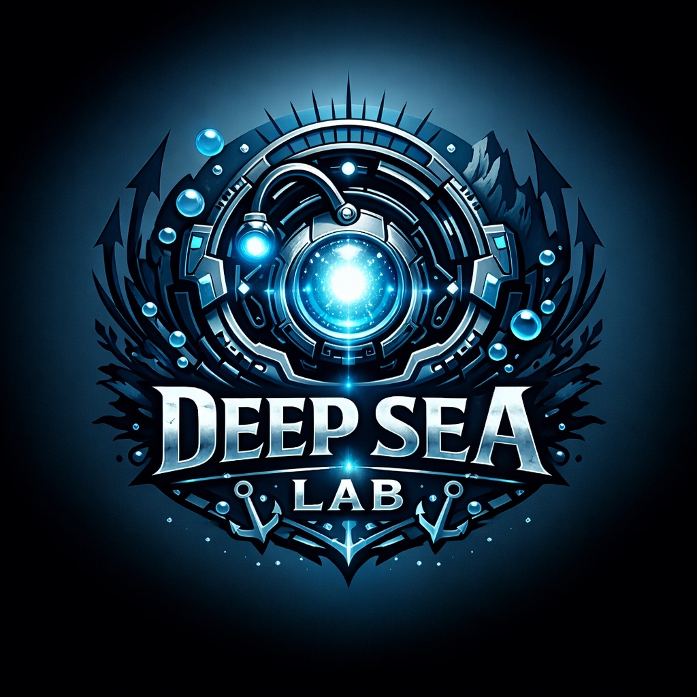
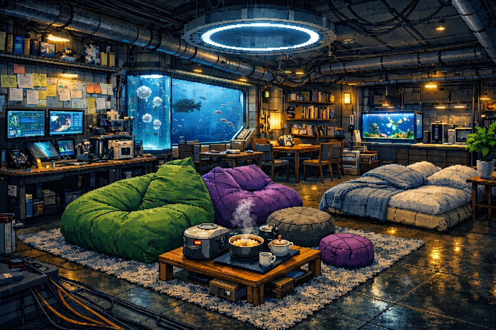
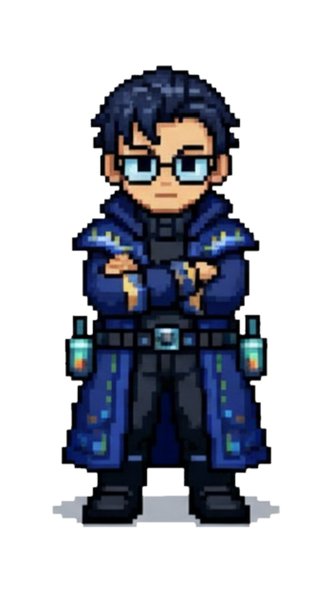
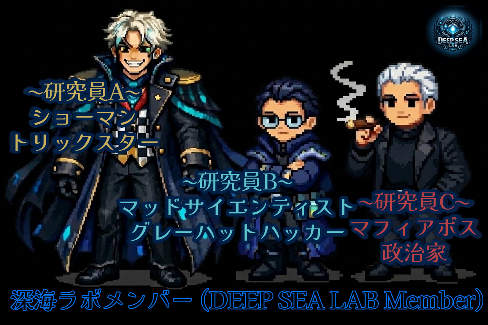
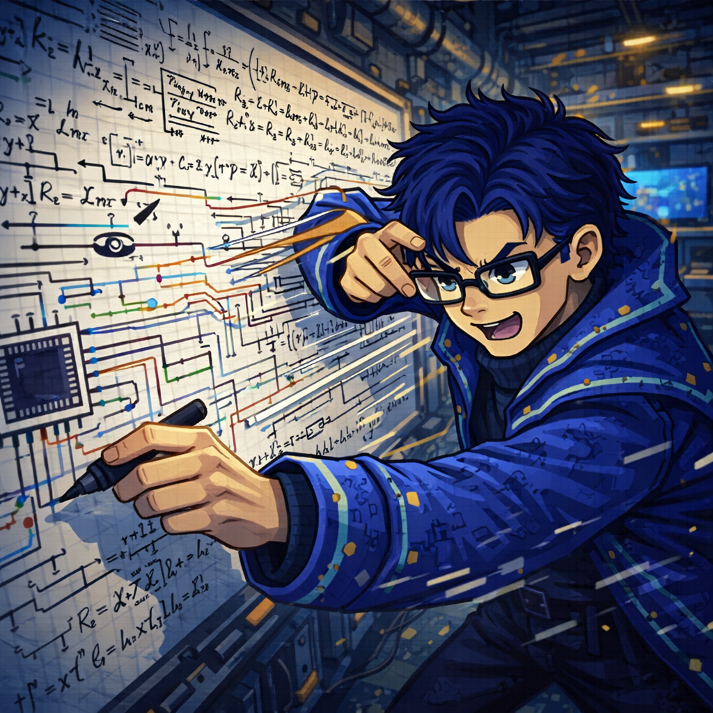

※ SUNO AIのURLは直接再生できません。MP3ファイルをDLして「ファイル」タブから再生してください

魔王×大天使。ヨギボーで寝るのが好き。たまに話を広げすぎて収拾がつかなくなるが、本人はだいたい楽しそう。あだ名は騒音。

マッドサイエンティスト×グレーハットハッカー。考え事を始めると急に静かになる。机の上は散らかって見えるのに、本人の中では全部どこにあるか分かってる。
マフィアボス×政治家。無糖の珈琲を嗜む。妙にそれっぽい格言を残して去るが、たまに本人も雰囲気で言ってる。「焦るな。濁った水ほど足元を隠す」とか言いそう。